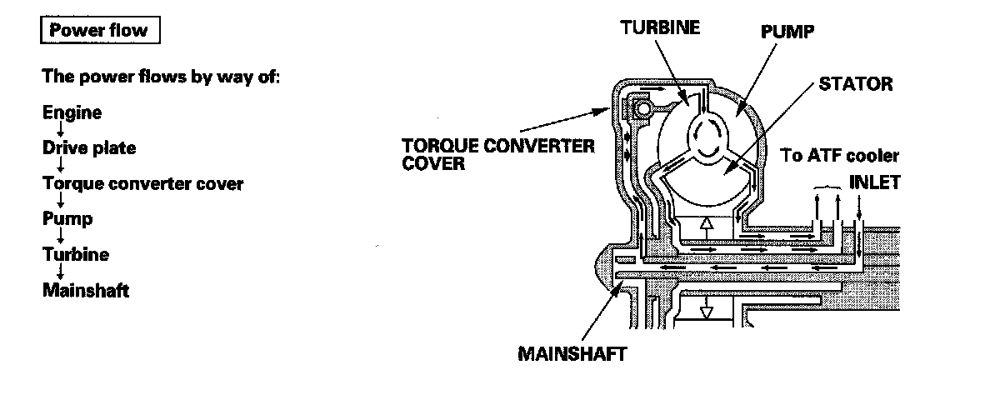

Lock-Up System
Lock-up SystemThe lock-up mechanism of the torque converter clutch operates in 2nd, 3rd, 4th, and 5th gears in the D position, and in 2nd and 3rd gears in the D3 position. The pressurized fluid is drained from the back of the torque converter through a fluid passage, causing the torque converter clutch piston to be held against the torque converter cover. As this takes place, the mainshaft rotates at the same speed as the engine crankshaft. Together with the hydraulic control, the PCM optimizes the timing and amount of the lock-up mechanism. When shift solenoid valve D is turned on by the PCM, shift solenoid valve D pressure switches the lock-up shift valve lock-up on and off. A/T clutch pressure control solenoid valve C, the lock-up control valve, and lock-up timing valve control the amount of lock-up.
Torque Converter Clutch Lock-up ON (Engaging Torque Converter Clutch)
Fluid in the chamber between the torque converter cover and the torque converter clutch piston is drained off, and fluid entering from the chamber between the pump and stator exerts pressure through the torque converter clutch piston against the torque converter cover. The torque converter clutch piston engages with the torque converter cover; the torque converter clutch lock-up is ON, and the mainshaft rotates at the same speed as the engine.
Torque Converter Clutch Lock-up OFF (Disengaging Torque Converter Clutch)
Fluid entered from the chamber between the torque converter cover and the torque converter clutch piston passes through the torque converter and goes out from the chambers between the turbine and the stator, and between the pump and the stator. As a result, the torque converter clutch piston moves away from the torque converter cover, and the torque converter clutch lock-up is released; the torque converter clutch lock-up is OFF.

No Lock-up
The PCM commands shift solenoid valve D to remain OFF, and shift solenoid valve D covers the port of shift solenoid valve D pressure (SD) to the lock-up shift valve. The lock-up shift valve is in the right side, and uncovers the port leading torque converter pressure (92) to the left side of the torque converter. Torque converter pressure (92) from regulator valve becomes torque converter pressure (94) at the lock-up shift valve, and enters into the left side of the torque converter to disengage the torque converter clutch. The torque converter clutch is OFF.
NOTE: When used, "left" or "right" indicates direction on the hydraulic circuit.
Partial Lock-up
As the speed of the vehicle reaches the programmed value, the PCM turns shift solenoid valve D ON, and shift solenoid valve D uncovers the port of shift solenoid valve D pressure (SD) to the lock-up shift valve. The lock-up shift valve is moved to the left side to uncover the port of torque converter pressure (91) leading to the right side of the torque converter to engage the torque converter clutch. The PCM also controls A/T clutch pressure control solenoid valve C, and A/T clutch pressure control solenoid valve C pressure (58) is applied to the lock-up control valve and lockup timing valve. When A/T clutch pressure control solenoid valve C pressure (58) is low, torque converter pressure (91) from the lock-up timing valve is low. The torque converter clutch is engaged partially. A/T clutch pressure control solenoid valve C pressure (58) increases, and the lock-up timing valve is moved to the left side to uncover the port leading torque converter pressure to high. Under this condition, the torque converter clutch is engaged by pressure from the right side of the torque converter; this condition is partial lock-up.
NOTE: When used, "left" or "right" indicates direction on the hydraulic circuit.
Full Lock-up
When the vehicle speed further increases, the PCM controls A/T clutch pressure control solenoid valve C to increase A/T clutch pressure control solenoid valve C pressure (58). A/T clutch pressure control solenoid valve C pressure (58) is applied to the lock-up control valve and lock-up timing valve, and the lock-up control valve and lock-up timing valve are moved to the left side. Torque converter pressure (94) from the left side of the torque converter releases at the lock-up control valve, and lock-up timing valve uncovers the port of torque converter pressure (91) leading to the right side of the torque converter. Torque converter back pressure is released fully, and torque converter clutch is engaged fully.
NOTE: When used, "left" or "right" indicates direction on the hydraulic circuit.